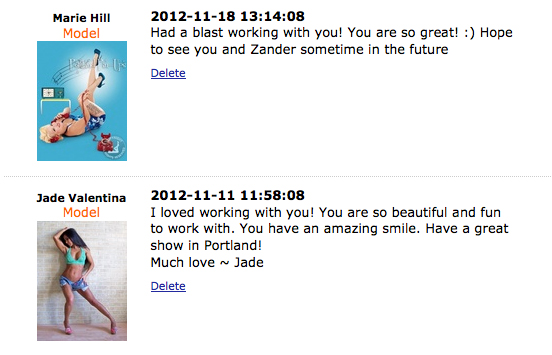

My name is Norell, I am an artist and musician living my dreams and caring for many animals with my own independent animal rescue off-grid in the high desert of Arizona. I produce websites and other media remotely, and work with many businesses remotely, including many small businesses of my own. Thanks to Starlink internet, I have that capability, and I am powered fully by the sun. I am always open to collaborating in diverse work environments, with special interest in those opportunities that can be done remotely. Here is a little of my background, in case I might be a wonderful team asset for you and your brand / company / contract!
Education
Fall 2009 - Summer 2011 University of Minnesota College of Liberal Arts | Bachelor of Arts in Communications
I transferred here from a private school, Northland College, and averaged 19+ credits per semester, maintained a GPA above 3.6., while adapting from a school of only about 500 students to a university with over 10,000+ students. I was on the Dean's List all semesters in attendance. While in attendance at the UofM College of Liberal Arts, I sang in the Women's Chorus, and also interned as a Personal Assistant for Jacob Alexander aka the artist Zander. I managed his model agency and assisted for all live and studio body painting gigs and events, sometimes modeling as one of his human canvases myself, such as when one model took a flight the night she was supposed to get painted for a benefit. To even work this internship I had to petition to take more than the allowed 20 credits, as this put me at 22. I graduated in May 2011, with a proficiency in the German language, both written and spoken.
Fall 2007 - Summer 2009 Northland College | General Liberal Art Studies
I attended two years at Northland College mainly so I could take care of my grandfather, who I was very close to and who lived close to the small private environmentalist college, but also because I was invited to attend with several scholarships and grants for both my academics and my athletics. I was a 1st Soprano in Northland Singers, Drama Club, and as a Northland LumberJill I played mid-field on the women's soccer team for two years. I had been scouted during high school soccer games where I played all positions, but namely defense and midfield, this was one of my scholarships. I did decide to transfer schools for several reasons, but for one, Northland College did not really have a particular degree they offered that I was interested in, so I decided I would transfer to a bigger University where I could have more options available, even if it meant I had to work twice as hard, sometimes taking credits over (repeating courses) because they didn't transfer correctly from the private to public universities.

Employment
Winter 2023 - Present Eden's Fruit | Lead Developer.
I am the lead developer and website designer for https://edensfruit.com and maintain all front and back end of code and server functionality. I also lead market outreach and secure website contracts. I provide the majority of all website development and UX / UI design for clients from start to finish, from securing domains, registering them, cloning repositories and working with Terminal, and more. I manage and reply to the emails that come in for various services offered. I design, with love, aesthetically pleasing websites, and strive to do so while besting our competitor rates for the services we provide.
Spring 2016 - Spring 2020 Dongpo Kitchen | Server
I opened two busy Meizhou Dongpo locations in California. Dongpo is a global Sichuan restaurant chain, and my husband and I were both hired to open and train in other staff at their palace-like Dongpo Restaurant in Arcadia, CA, and later we transferred to open and train in staff at the Universal Studios Dongpo Kitchen, located in Universal City, CA. We both came highly recommended by Tony and Melissa Wang, a couple I had worked for at their Tea House restaurant in the Twin Cities, MN. With the Tea House, as well as with Dongpo Kitchen, I was offered lead server and management positions, but opted to maintain my role as a Server and for over four years I was a reliable team member Monday - Friday during the busy lunch shifts at a fast-paced, international tourist hotspot of the world, where I spoke beginners to intermediately a multitude of languages ranging from German, Mandarin, Japanese, Korean, Thai, and more. Regular customers included executive producers and the President of Universal Studios, along with celebrities like Wim Hof the Iceman, Mario Lopez (Saved by the Bell and Entertainment TV), and more. With the pandemic that erupted in late 2019 / early 2020, the restaurant was closed temporarily and my husband and I were laid off. We then cut our losses in Cali and moved off grid to Arizona. Vice President of Food Service Operations at Universal Studios Hollywood, David Hamano, in email testimony proclaimed that my husband and I were his two favorite servers there.
Spring 2014 - Winter 2014 Harper Simon | Social Media Manager
I managed multiple social media accounts and scheduled posts for his pages, including for his Facebook and Instagram pages. I was hired temporarily by his former Social Media Manager, Kick Kennedy, who trained me to do all of his social media management using Sprout Social.
Winter 2014 - Spring 2016 Postmates | Independent Contractor & Courier in NYC and LA
I provided exceptional customer service while delivering an assortment of goods to people in the greater New York City area from January 2015 to September 2015. I traveled to the midwest to help with some family matters briefly, and then resumed working for Postmates in Los Angeles, CA from December 2015 to May 2016. Some highlights include giving comedian Chris Rock a hug on Valentine's Day when I delivered sushi to his Los Angeles home, delivering wine to Krysten Ritter who plays Marvel's Jessica Jones, and delivering a gameboy and assortment of games to Christina Aguilera's boyfriend around Christmas. My biggest highlight, however, was that I was able to intervene and save a young woman's life when I delivered Ibuprofen to her in NYC during the Ebola outbreak and scare. She was deathly ill upon receiving her delivery, and I asked her if she would like me to call an ambulance. She nodded, unable to speak. I got paramedics on the line and explained the symptoms I had witnessed her displaying and that they needed to send an ambulance out to her location right away. I maintained I would not hang up until I knew one was on their way. Days later I got a text message from the girl, who was 22 years old at the time, and she had thanked me saying that the doctor's told her had she made it into the hospital just ten minutes later she would have died from brain swelling.
Fall 2014 - Fall 2015 TakeLessons | Online Tutor
I have given remote and in-person lessons on many topics, from interior design, to typing, and more. I have had many students on various topics and have enjoyed sharing my expertise to help them in some aspects in their lives.
More Employment History | Available Upon Request
I have experience ranging from personal training to all kinds of creative expertise, from hair and makeup, to modeling, photography, videography, assistant promotion and event curating, event management, and more. I also have experience in industries such as hospitality including experience working for Towneplace Suites by Marriott, and I also was an Assistant Manager of a condominium-style hotel, to other front desk representative jobs, to food industry experience including a lead server at a fast-paced, international tourist hotspot of the world, where I spoke beginners to intermediately a multitude of languages ranging from German, Mandarin, Japanese, Korean, Thai, and more.
"She was amazing to work with and directed the models and myself very well. She does more than just modeling, but agent work and hair and the list goes on. All I can say is that she has the world in her hands. This woman is amazing to work with and easy going. She makes you feel very comfortable in whatever situation you are in. She is a beautiful woman inside and out. If you get the chance and she casts you - definitely take it - you won't regret it!"
Technical Skills
- Music Production
- Video Production
- Graphic Design
- Photography
- Videography
- Adobe Premiere Pro
- Adobe Audition
- Adobe Photoshop
- Adobe Illustrator
- Mobile Development
- Sublime Text
- XCode
- Android Studio
- Eclipse
- CSS3
- HTML5
- jQuery
- jQuery Mobile
- UI/UX Design
- Company Branding
- Marketing
- Developing Marketing Campaigns
- Editing
- Writing
- Responsive Web Design
- Business Card Design
- Remote Virtual Lessons
- German Translation
- Life Coaching
- Interpersonal Skills
- Communication Skills
- Blogging Skills
- Social Media Skills
- Product Design
- Product Launch
- Proofreader
- Freelance Writer
- Email Marketer
- Social Media Manager
- Personal Trainer
- Online Beauty Advisor
References
I excel in any field where adept communications and empathy are required. I have multiple years of experience working in hospitality including Marriott Towneplace Suites, and many international brands. Would you like to speak to a past employer or someone who worked alongside me on a past job or contract? Maybe you want to speak to a past supervisor, or maybe the owner of the condominium-style hotel I was quickly promoted to Assistant Manager to? Or maybe you would like to hear for yourself what it is like having my assistance and creative skills on the table from an artist I've worked alongside for well over a decade plus?! Let me know if there is someone you would like me to place you in contact with regarding my professional work history!
Available Upon Request!
Personal Interests
- Singing
- Song Writing
- Producing Music
- Producing Videos
- Attending Concerts
- Animal Rescue
- Animal Snuggles
- Gardening
- Cooking
- Baking
- Reading
- Writing
- Painting
- Anything Creative
- Nature Hikes
- Rock Foraging
- Fitness Training
- Dancing
- Good Vibes - People and/or Animals
- Essential Oils
- I'd love to learn how to make candles
- I'd love to learn how to make soap